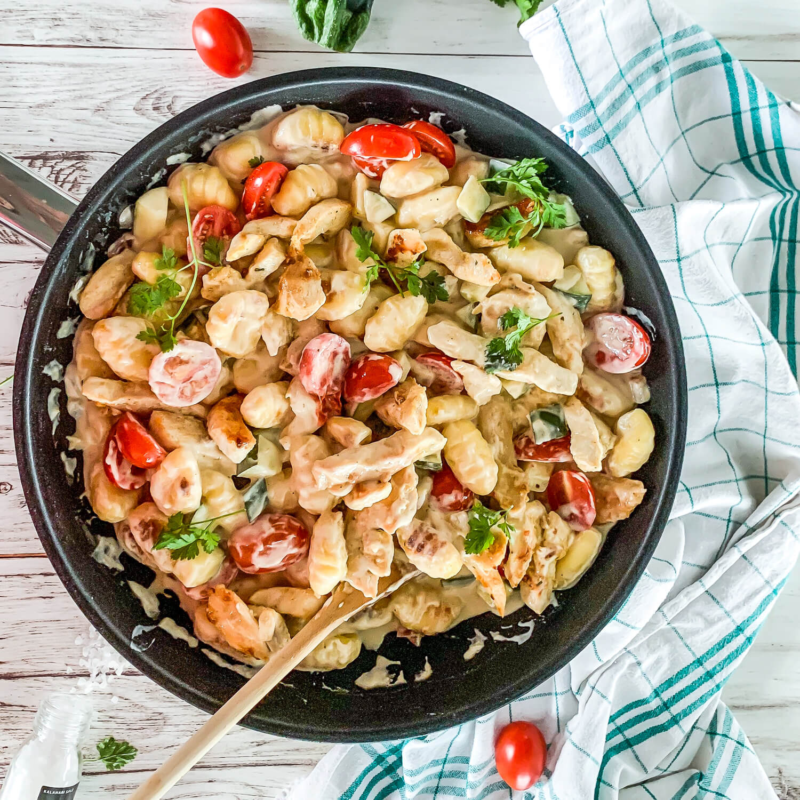

Gnocchi-Gemüsepfanne

| 1 Beutel Gnocchi (ca. 500g) |
| etwas Öl zum Braten |
| 1 Zwiebel |
| 1 Handvoll Cocktailtomaten |
| 1 Zucchini |
| 1 Aubergine |
| Bund Ptersilie |
| Salz und Pfeffer |
| 1 TL Honig oder Zucker |
Zubereitung
Die Gnocchi in einer heißen Pfanne im Olivenöl etwas anbraten. Die Zwiebel würfeln, zu den heißen Gnocchi geben und glasig anschwitzen. Das Gemüse waschen und in kleine Würfel schneiden. Die Cocktailtomaten halbieren. Das gesamte Gemüse zu den Gnocchi in die Pfanne geben und auf mittlerer Stufe dünsten. Nach ca. 15 Min. ist das Gemüse gar. Die Petersilie hacken und in die Pfanne geben. Zum Schluss mit Salz, Pfeffer und Honig abschmecken.
Rezept erstellt von
 Dennis
Dennis